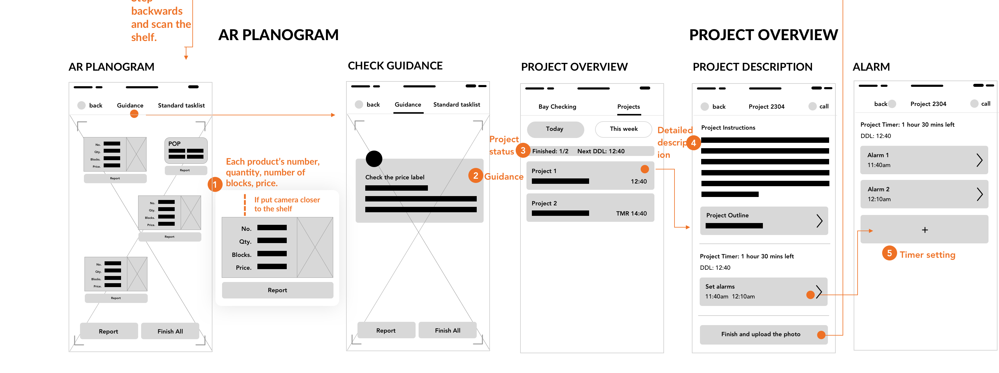
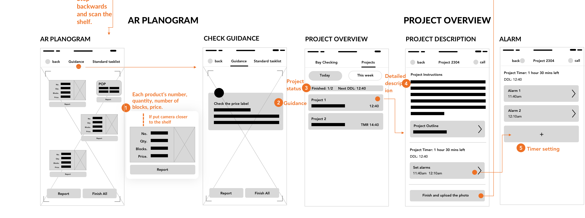
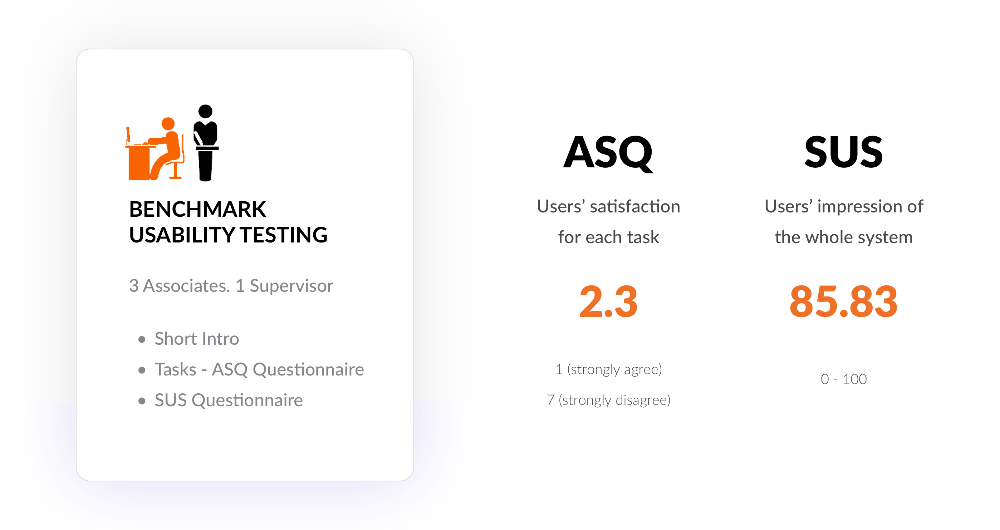

OVERVIEW
| ROLE | UX Designer. UX Researcher |
| with Taylor Stillman. Fred Liu. Yannu Li | |
| DURATION | Aug 2018 - Dec 2018 |
| TAG | AR. Customization. |
| TOOL | Sketch. Principle. InVision. Framer. |
CHALLENGES
DESIGN OUTCOME


PROCESS

RESEARCH
COMPETITIVE ANALYSIS
As our goal is to improve the efficiency of workflow, we studied current task management platforms that help teams complete tasks more efficiently and retail technologies that are on the market.

Key takeaways for project management platforms are:
- Pros: Clear status of what the project is going on.
- Cons: Most platforms are not free; high learning curve; allocating projects cost a lot of efforts.
RESEARCH OVERVIEW

ANALYZE
AFFINITY MAPPING
After the three stages of research - stakeholder interview, observation, and contextual inquiry, we used spreadsheets and affinity mapping to summarize our results. The main takeaways including:

JOBS TO BE DONE (JTBD)
After another round of expert interview, we confirmed that the pain points we summarized from the affinity mapping were aligned with The Home Depot's business goal. So we started to analyze our target users using JTBD:
JTBD: A similar method of journey map. It all starts from defining who's the target user, what tasks users need to do, what's the subtask flow for each task, and also criteria to evaluate key functions and users' emotion.
But the difference is that it starts to think about desired outcome at this stage, so that we could keep in mind goals for the whole process.


EMPATHY MAP
In order to provide more empathy to users and also identify potential accessibility issues, we analyzed the following empathy map:

SUCCESS CRITERIA
Finally, we summarized the following success criteria we would like to focus on to guide the next stage of design:

IDEATION
BRAINSTORMING
First, we used mindmap for our divergent brainstorming session.
Next, we created a creativity/feasibility chart to evaluate each idea's feasibility and creativity. For the convergent brainstorming session, we dismissed ideas with low feasibility and low creativity, and categorized other ideas to three concepts.
THREE CONCEPTS


CONCEPT FEEDBACK
Based on the feedback session for 2 associates and 1 supervisor, we identified some features they extremely like and also some features with potential issues. We iterated the design concept.

WIREFRAME
After iterating concepts, we drew the wireframe to finalize the functions and interactions:

 
HIFI DESIGN
VISUAL DESIGN
When deciding the visual style of the app, we kept in mind that it should follow The Home Depot's branding and visual principles. Clear hierarchy and simplicity is needed. The app should follow material design guideline and color usage should be '60% of white, with the primary color indicating the most important information'.

INTERFACE DESIGN
For the interface design, in order to make the color and format style consistent, Fred made a template first. And then we followed the material design guideline to finalize the interfaces, in which Fred and I were responsible for the app design and Yannu was in charge of the dashboard design:
BAY OVERVIEW

EXPERT FLOW


AR PLANOGRAM

BAY TASKS

PROJECT OVERVIEW

EVALUATION
PROTOTYPE
To conduct user testing, we quickly built prototypes (feel free to click the link to take a look: associates' app, supervisor's dashboard). As the time constraints, we chose InVision as the prototype tool, although some gestures and animations can not be implemented.
If time allows, we would use Framer or ProtoPie to prototype. It would reduce some usability issues we designed but unable to implement and provide more seamless experience so that we can get more users' autual feelings and feedback.
HEURISTIC EVALUATION
We conducted heuristic evaluation with designers and PMs in The Home Depot to make sure our design follows success criterias that we brought up before - like flexibility, dynamic information, communication...
For 6 experts we interviewd, they expressed praises of our product. Especially for efficiency of use and asthetic and minimalism design, they all gave the highest score.
BENCHMARK USABILITY TESTING
We conducted task-based benchmark usability testing to evaluate users' satisfaction and identify real-world-use usability issues. Participants filled out ASQ questionnaire after each task and SUS questionnaire after all tasks:
DESIGN ITERATION
We used to spreadsheat to summarize results and design recommendations together and ranked the importance of each problem. I picked top two questions and conducted design iteration. Other redesign is still ongoing...
“Users wondering what they should do and what this page is about?” It also does not have clear exit

“I cannot see the label very clear. I want to click it.“

NEXT STEP
Finish design iteration and build Framer Prototype
Apart from previous two issues, other issues also need to be solved:
- Missed guided descriptions like 'how expert flow works?', 'Why do I need to upload a photo?', 'What's project instructions for each step are about?'
- Undiscoverable of key features like safety button and switch button of expert flow.
- Instead of using mobile app, consider AR headset to further solve accessibility issues.
Further cooperation with The Home Depot
We presented the process and the final design to The Home Depot at Dec. They were impressed by our ideas, especially AR and expert flow part . We intended to implement the AR part and test it in The Home Depot stores. Lastly, best thanks to The Home Depot for all the supports! So that we can get real world problem and users first and then get a lot of feedback from The Home Depot designers and a product manager during the process!